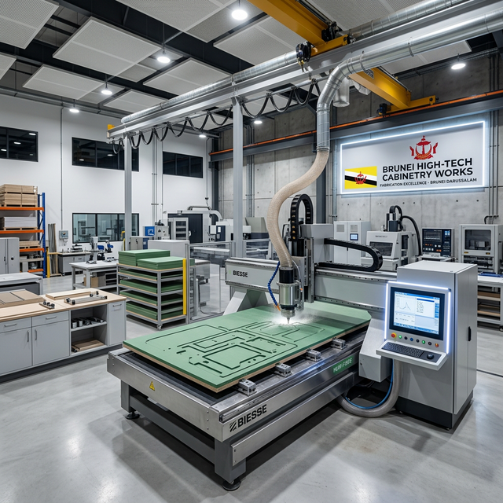

In 2026, the Brunei cabinetry market has matured into three distinct tiers. While we are one of these players, we believe an educated customer is our best advocate. Here is the objective breakdown of how cabinets are made and sold in Brunei today.

1. The Global Franchise Model
Major brands like Shangpin or PA Home offer a corporate, slick experience. They are heavy on 3D design software and showroom aesthetics.
- The Catch: Most are franchises that import from massive factories in China (Guangzhou/Zhaoqing). While the designs are modern, the materials are often optimized for China's climate, not Brunei's 80-90% humidity.
- Lead Times: 12-16 weeks due to sea freight and customs.
2. The Local Precision Factory (Caramella Model)
This is where precision engineering meets local accountability. We represent this tier: Brunei-owned factories utilizing German or Italian CNC machinery to fabricate *on-site* in Brunei.
- The Advantage: We select carcass materials specifically for Brunei humidity (Moisture Resistant MDF/Plywood) and heat-seal our edges at 190°C locally. If a measurement is off by 1mm, we fix it in our Lambak-area workshop the same day.
- Lead Times: 10-14 weeks (No sea freight delays).
3. The Traditional Freelance Carpenter
Individual carpenters or small workshops that use hand-tools or semi-automatic saws. This is often the "cheapest" quote.
- The Risk: Hand-cut boards often have micro-chips in the laminate, allowing moisture to seep in. This leads to the "swelling" seen in older Brunei kitchens. Reliability is the major variable here.
Which model is right for you?
If you prioritize brand name and global templates, go Franchise. If you want the lowest possible price, find an Independent Carpenter. If you want Precision, Humidity-Resistance, and Local Accountability, choose the Factory Model.